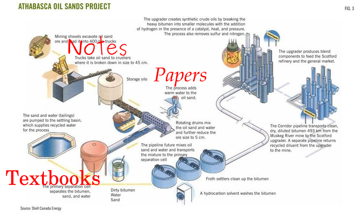

Machine Learning with TensorFlow
Lecture 1
How to read research papers: Word2Vec
Using These Slides
↓, PgDn, n, j |
next slide |
↑, PgUp, p, k |
prev slide |
Esc |
enables ctrl+f globally |
Refinery
1. Research notes
2. Research papers
3. Academic textbooks
4. Programming books
5. Tech articles
6. Programming blogs
Blogs
Tech articles

Programming and technology books
Academic Textbooks
Research Papers
Dissect the title
Distributed Representations of Words and Phrases and their Compositionality
Some immediate questions...
- Are words just one-word phrases?
- Words and phrases have representations?
- They also have compositionality?
- A representation can be distributed?
Distributed Representations of Words and Phrases and their Compositionality
Skip to the first figure

Understand the first equation
Words are indexed in order left to right.
$..., w_{t-2}, w_{t-1}, w_{t}, w_{t+1}, w_{t+2}, ...$
| Word | Index |
|---|---|
| the | 1 |
| quick | 2 |
| brown | 3 |
| fox | 4 |
| ... | ... |
The $\mathcal{C}$ontext of a word is a tuple of neighboring words.
$\mathcal{C}(w_t; c) := (w_{t-c}, ..., w_{t-1}, w_{t+1}, ..., w_{t+c})$
the quick brown fox jumps over...
$\mathcal{C}(brown; 2) = (the, quick, jumps, over)$
"Maximize the average probability of predicting the context"
Let's repharse that mathematically
Maximize the average probability of predicting the context
$\max$ something
Keep going...
Maximize the average probability of predicting the context
$\max \mathbf{E}[$ something $]$
And keep going...
Maximize the average probability of predicting the context
$\mathbf{E}[p($ something $)]$
Done!
Maximize the average probability of predicting the context
$\mathbf{E}[p(\mathcal{C}(w_t) | w_t)]$
Use log-probability instead:
$\mathbf{E}[\log p(\mathcal{C}(w_t) | w_t)]$
Assume conditional independence:
$=\mathbf{E}[ \log \big( p(w_{t-c} | w_t) ... p(w_{t+c} | w_t) \big) ]$
Simplify notation:
$=\mathbf{E}[\log \prod_{j} p(w_{t+j} | w_t) | w_t)]$
where $-c \leq j \leq c$ and $j \neq 0$Simplify log-of-products into sum-of-logs:
$=\mathbf{E}[\sum_{j} \log p(w_{t+j} | w_t) | w_t)]$
where $-c \leq j \leq c$ and $j \neq 0$
Assume uniform probability of words:
$=\frac{1}{T}\sum_{w_t} \sum_{j} \log p(w_{t+j} | w_t) | w_t) $